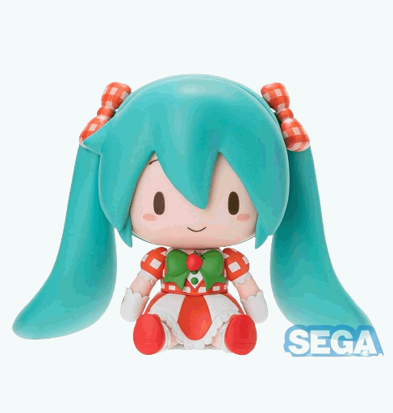
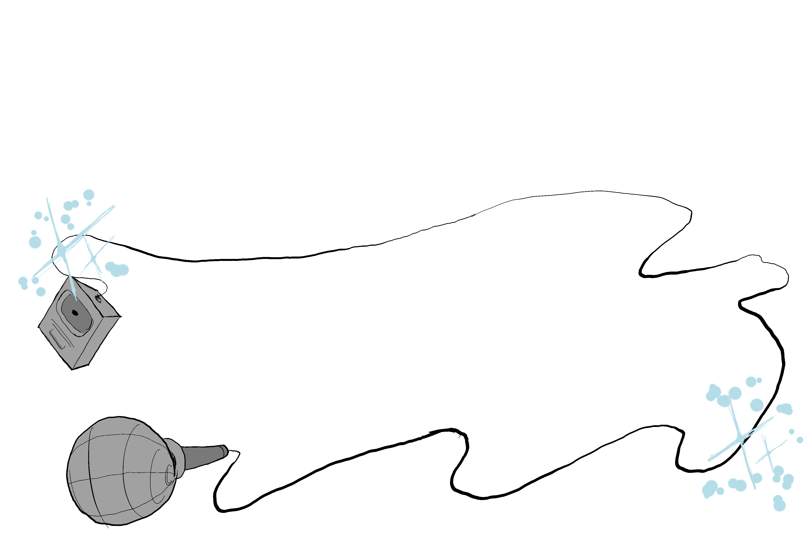
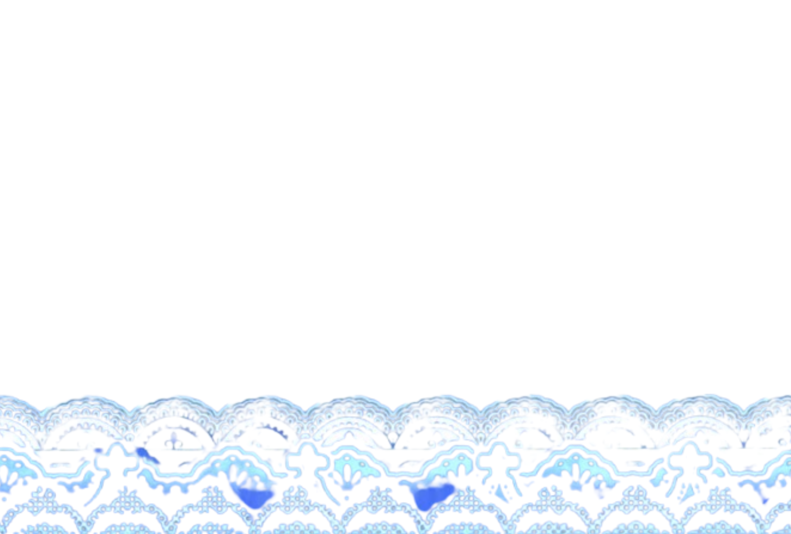
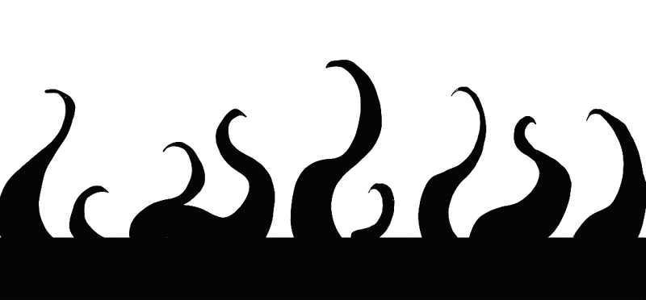
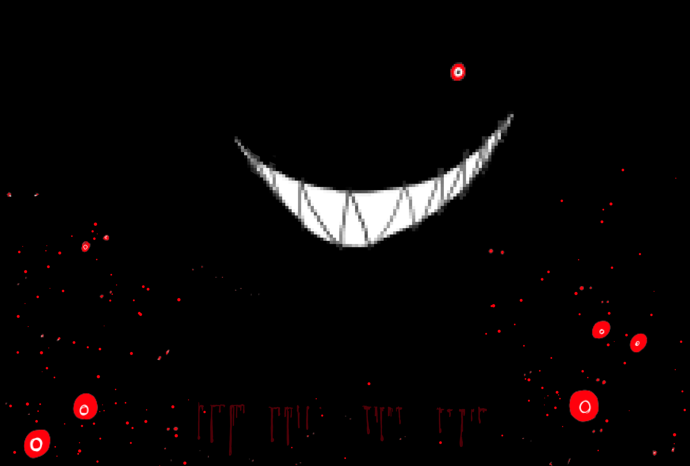
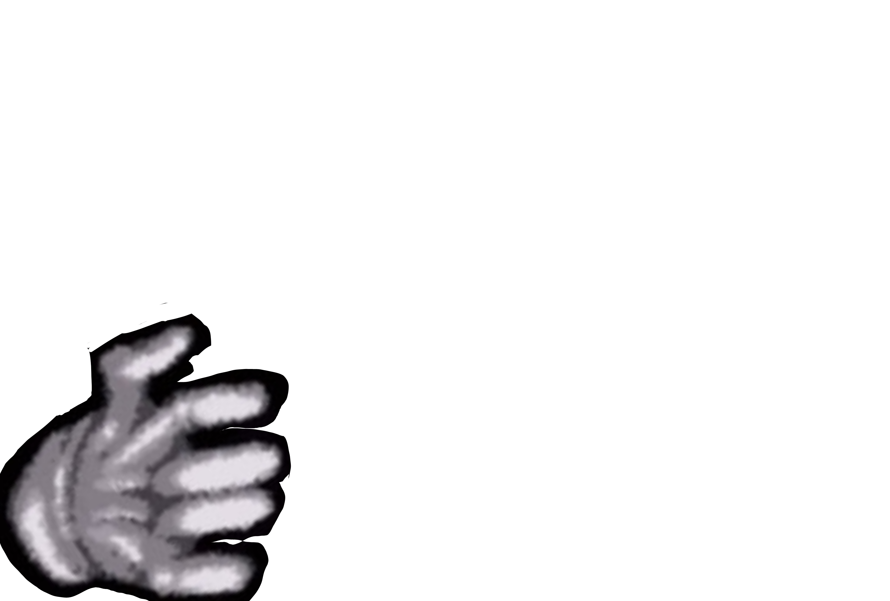

Sobre Nós
BlueStatic é um site fan-made cujo objetivo é reunir informações e conteúdo sobre Vocaloids.
O site contém uma vasta coleção de artigos, imagens e vídeos dedicados aos Vocaloids, seja conteúdo fan-made ou oficial, curiosidades obscuras, discografia e muito mais.
Tentamos manter o conteúdo sempre atualizado e de qualidade prezando a experiencia do usuário.


Vocaloids
Os Vocaloids são uma série de softwares de síntese de voz desenvolvidos pela Yamaha Corporation, que permitem aos usuários criar músicas com vozes humanas geradas por computador.
O software utiliza amostras de vozes humanas gravadas por cantores e cantoras, que são processadas e manipuladas para criar novas melodias e letras.
Os Vocaloids se tornaram populares na cultura pop japonesa e em todo o mundo, com muitos artistas e produtores musicais utilizando-os em suas produções.
Vocaloid.EXE
Vocaloid.EXE são uma das muitas Subcultura da Comunidade EXE, focada principalmente em versões mais macabras e violentas das personagens de vocaloid.
Essas interpretações tem como base histórias de terror e músicas, já que o lado musical é um dos grandes aspectos da comunidade de vocaloid.
Por isso, muitas Vocaloids.EXE tem suas origens baseadas em músicas.



EXES
∪㎡ ᴱ乂ᴱ̦ 𝞰𝚊 ⅆ𝘦ƒ𝞰𝓲çã𝒐 ㎡𝚊𝓲ᣵ ᶜ𝒐㎡𝙪㎡𝘦𝞰ᵗ𝘦 𝚊ᶜ𝘦𝓲ᵗ𝚊̦ é 𝙪㎡𝚊 𝐕𝘦𝐫ᣵã𝒐 𝚊Іᵗ𝘦𝐫𝞰𝚊ᵗ𝓲𝐕𝚊 ⅆ𝘦 𝙪㎡ ⍴𝘦𝐫ᣵ𝒐𝞰𝚊g𝘦㎡̦ g𝘦𝐫𝚊І㎡𝘦𝞰ᵗ𝘦 𝒐𝐫𝓲g𝓲𝞰𝚊ⅆ𝒐 ⅆ𝘦 𝙪㎡ 𝐕𝓲ⅆ𝘦𝒐g𝚊㎡𝘦̦ ᶜ𝒐㎡ 𝙪㎡ ƒ𝒐ᶜ𝒐 ㎡𝚊𝓲𝒐𝐫 𝞰𝒐 ᵗ𝘦𝐫𝐫𝒐𝐫ⴰ
ᴱ㎡ᵇ𝒐𝐫𝚊 𝚊ᵗ𝙪𝚊І㎡𝘦𝞰ᵗ𝘦 𝘦᙮𝓲ᣵᵗ𝚊㎡ ㎡𝙪𝓲ᵗ𝒐ᣵ ᴱ乂ᴱᣵ̦ 𝒐 ㎡𝚊𝓲ᣵ ᶜ𝒐𝞰𝐡𝘦ᶜ𝓲ⅆ𝒐̦ 𝘦 𝒐 ⍴𝐫𝓲𝞰ᶜ𝓲⍴𝚊І ⍴𝚊𝐫𝚊 𝘦ᣵᣵ𝚊 ᣵ𝘦çã𝒐̦ é 𝚊 𝐡𝓲ᣵᵗó𝐫𝓲𝚊 𝘦ᣵᶜ𝐫𝓲ᵗ𝚊 𝒐𝐫𝓲g𝓲𝞰𝚊І㎡𝘦𝞰ᵗ𝘦 𝘦㎡ ƒ𝒐𝐫㎡𝚊ᵗ𝒐 ⅆ𝘦 ᶜ𝐫𝘦𝘦⍴𝘆⍴𝚊ᣵᵗ𝚊 𝒐 ꕶ𝒐𝞰𝓲ᶜⴰ𝘦᙮𝘦̦ 𝘦㎡ᵇ𝒐𝐫𝚊 𝚊 ᣵ𝙪𝚊 ⍴𝒐⍴𝙪І𝚊𝐫𝓲ⅆ𝚊ⅆ𝘦 ᵗ𝘦𝞰𝐡𝚊 ᶜ𝐫𝘦ᣵᶜ𝓲ⅆ𝒐 𝚊⍴óᣵ 𝒐 ƒ𝚊𝞰g𝚊㎡𝘦 ⅆ𝘦 2012
ᴱ𝞰ᵗ𝐫𝘦ᵗ𝚊𝞰ᵗ𝒐̦ 𝚊ᣵ 𝐡𝓲ᣵᵗó𝐫𝓲𝚊ᣵ ㎡𝒐ⅆ𝘦𝐫𝞰𝚊ᣵ ᣵ𝘦 ⅆ𝓲ᣵᵗ𝚊𝞰ᶜ𝘦𝚊𝐫𝚊㎡ ⅆ𝒐 ᶜ𝐫𝓲𝚊ⅆ𝒐𝐫 𝒐𝐫𝓲g𝓲𝞰𝚊І ⍴𝒐𝐫 ⅆ𝓲𝐕𝘦𝐫ᣵ𝚊ᣵ ⍴𝒐Іê㎡𝓲ᶜ𝚊ᣵⴰ ʀ𝘦ᣵ𝙪Іᵗ𝚊𝞰ⅆ𝒐 𝘦㎡ 𝙪㎡𝚊 ᶜ𝒐㎡𝙪𝞰𝓲ⅆ𝚊ⅆ𝘦 ⍴𝐫ó⍴𝐫𝓲𝚊 𝕢𝙪𝘦 𝚊ᶜ𝚊ᵇ𝒐𝙪 ᶜ𝐫𝘦ᣵᶜ𝘦𝞰ⅆ𝒐 𝘦 ᶜ𝐫𝓲𝚊𝞰ⅆ𝒐 𝞰𝒐𝐕𝚊ᣵ ᶜ𝒐㎡𝙪𝞰𝓲ⅆ𝚊ⅆ𝘦ᣵ